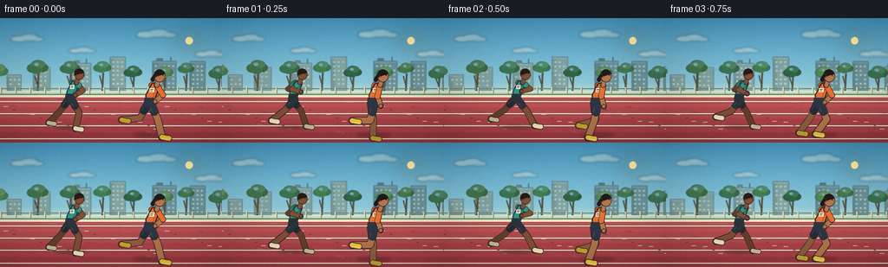
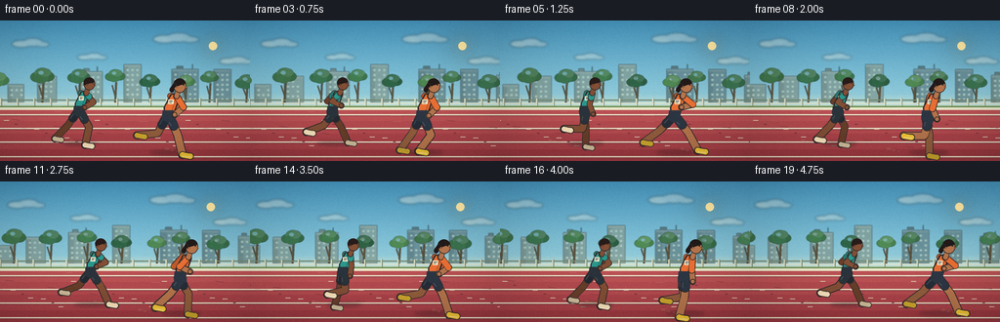
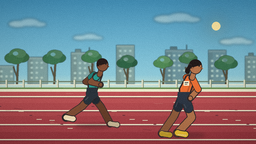
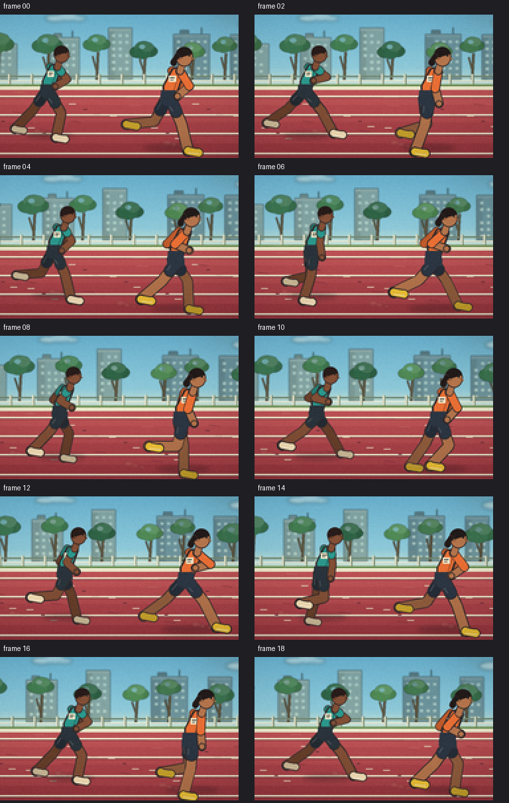
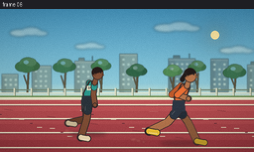

CODING AGENTS AS PIXEL WORLD MODELS
traex/DeepSeek-V4.1-Flash · instance_preservation_0033
点击播放 · 原生 RGB 像素
逐轮保存的候选
回放视频、检查图与代码变化。
每份候选均可单独播放。实际图片检查记录在下方工具轨迹中。
候选 01播放与检查图
点击播放 · 原生 RGB 像素


展开代码变化
--- 上一保存版本
+++ 本次保存版本
@@ -0,0 +1,585 @@
+from __future__ import annotations
+
+import math
+import random
+import sys
+from pathlib import Path
+
+import numpy as np
+from PIL import Image, ImageDraw, ImageFilter
+
+ROOT = Path(__file__).resolve().parent
+sys.path.insert(0, str(ROOT))
+import artifact_io # noqa: E402
+
+
+WIDTH = 256
+HEIGHT = 144
+FRAMES = 20
+FPS = 4.0
+SS = 4
+W = WIDTH * SS
+H = HEIGHT * SS
+
+
+def s(value: float) -> int:
+ return int(round(value * SS))
+
+
+def pt(x: float, y: float) -> tuple[int, int]:
+ return (s(x), s(y))
+
+
+def box(x0: float, y0: float, x1: float, y1: float) -> tuple[int, int, int, int]:
+ return (s(x0), s(y0), s(x1), s(y1))
+
+
+def shade(color: tuple[int, int, int], amount: float) -> tuple[int, int, int]:
+ if amount >= 0:
+ return tuple(int(c + (255 - c) * amount) for c in color)
+ return tuple(int(c * (1.0 + amount)) for c in color)
+
+
+def mix(a: tuple[int, int, int], b: tuple[int, int, int], t: float) -> tuple[int, int, int]:
+ return tuple(int(a[i] * (1.0 - t) + b[i] * t) for i in range(3))
+
+
+def capsule(
+ draw: ImageDraw.ImageDraw,
+ p0: tuple[float, float],
+ p1: tuple[float, float],
+ width: float,
+ fill: tuple[int, int, int],
+ outline: tuple[int, int, int] | None = None,
+ outline_width: float = 1.0,
+) -> None:
+ if outline is not None:
+ draw.line([pt(*p0), pt(*p1)], fill=outline, width=s(width + outline_width * 2), joint="curve")
+ radius = (width + outline_width * 2) * 0.5
+ for x, y in (p0, p1):
+ draw.ellipse(box(x - radius, y - radius, x + radius, y + radius), fill=outline)
+ draw.line([pt(*p0), pt(*p1)], fill=fill, width=s(width), joint="curve")
+ radius = width * 0.5
+ for x, y in (p0, p1):
+ draw.ellipse(box(x - radius, y - radius, x + radius, y + radius), fill=fill)
+
+
+def polyline(
+ draw: ImageDraw.ImageDraw,
+ points: list[tuple[float, float]],
+ width: float,
+ fill: tuple[int, int, int],
+ outline: tuple[int, int, int] | None = None,
+ outline_width: float = 1.0,
+) -> None:
+ if outline is not None:
+ draw.line([pt(*p) for p in points], fill=outline, width=s(width + outline_width * 2), joint="curve")
+ for x, y in (points[0], points[-1]):
+ r = (width + outline_width * 2) * 0.5
+ draw.ellipse(box(x - r, y - r, x + r, y + r), fill=outline)
+ draw.line([pt(*p) for p in points], fill=fill, width=s(width), joint="curve")
+ for x, y in (points[0], points[-1]):
+ r = width * 0.5
+ draw.ellipse(box(x - r, y - r, x + r, y + r), fill=fill)
+
+
+def add_soft_shape(
+ base: Image.Image,
+ shapes: list[tuple[str, tuple[float, float, float, float], tuple[int, int, int, int]]],
+ blur: float,
+) -> None:
+ layer = Image.new("RGBA", base.size, (0, 0, 0, 0))
+ d = ImageDraw.Draw(layer)
+ for kind, bounds, color in shapes:
+ if kind == "ellipse":
+ d.ellipse(box(*bounds), fill=color)
+ else:
+ d.rectangle(box(*bounds), fill=color)
+ layer = layer.filter(ImageFilter.GaussianBlur(s(blur)))
+ base.alpha_composite(layer)
+
+
+def build_sky() -> Image.Image:
+ y = np.linspace(0.0, 1.0, HEIGHT)[:, None]
+ top = np.array([73, 157, 207], dtype=np.float32)
+ middle = np.array([152, 208, 226], dtype=np.float32)
+ horizon = np.array([239, 237, 207], dtype=np.float32)
+ blend = np.clip(y / 0.62, 0.0, 1.0)
+ colors = top[None, None, :] * (1.0 - blend[:, :, None]) + middle[None, None, :] * blend[:, :, None]
+ low = np.clip((y - 0.52) / 0.20, 0.0, 1.0)
+ colors = colors * (1.0 - low[:, :, None]) + horizon[None, None, :] * low[:, :, None]
+ colors = np.repeat(colors, WIDTH, axis=1)
+ return Image.fromarray(np.uint8(np.clip(colors, 0, 255)), "RGB").resize((W, H), Image.Resampling.BICUBIC).convert("RGBA")
+
+
+def tree_color(i: int) -> tuple[int, int, int]:
+ palette = [
+ (54, 111, 76),
+ (64, 124, 82),
+ (45, 99, 70),
+ (76, 135, 83),
+ (61, 115, 75),
+ ]
+ return palette[i % len(palette)]
+
+
+def draw_clouds(layer: Image.Image, cam: float) -> None:
+ shapes = []
+ clouds = [
+ (27.0, 23.0, 30.0, 8.0, 0.05),
+ (91.0, 37.0, 24.0, 6.0, 0.08),
+ (175.0, 18.0, 37.0, 9.0, 0.04),
+ (238.0, 41.0, 27.0, 7.0, 0.07),
+ ]
+ for cx, cy, cw, ch, parallax in clouds:
+ x = ((cx - cam * parallax + 40.0) % 310.0) - 40.0
+ shapes.extend(
+ [
+ ("ellipse", (x - cw * 0.50, cy - ch * 0.35, x + cw * 0.15, cy + ch * 0.55), (255, 251, 239, 96)),
+ ("ellipse", (x - cw * 0.12, cy - ch * 0.62, x + cw * 0.55, cy + ch * 0.45), (255, 252, 244, 86)),
+ ("ellipse", (x + cw * 0.30, cy - ch * 0.20, x + cw * 0.78, cy + ch * 0.50), (255, 248, 235, 78)),
+ ]
+ )
+ add_soft_shape(layer, shapes, 1.3)
+
+
+def draw_sun(layer: Image.Image, cam: float) -> None:
+ x = 218.0 - cam * 0.025
+ y = 26.0
+ for radius, alpha in [(19.0, 16), (13.0, 24), (8.0, 40)]:
+ add_soft_shape(
+ layer,
+ [("ellipse", (x - radius, y - radius, x + radius, y + radius), (255, 233, 158, alpha))],
+ radius * 0.75,
+ )
+ d = ImageDraw.Draw(layer)
+ d.ellipse(box(x - 4.2, y - 4.2, x + 4.2, y + 4.2), fill=(255, 235, 172, 230))
+
+
+def draw_city(layer: Image.Image, cam: float) -> None:
+ city = Image.new("RGBA", layer.size, (0, 0, 0, 0))
+ d = ImageDraw.Draw(city)
+ rng = random.Random(31)
+ building_data = []
+ for i in range(-3, 12):
+ x = i * 43.0 + rng.uniform(-8.0, 8.0)
+ width = rng.uniform(15.0, 29.0)
+ height = rng.uniform(17.0, 42.0)
+ tone = rng.uniform(0.0, 1.0)
+ building_data.append((x, width, height, tone, rng.uniform(0.0, 1.0)))
+
+ for xw, width, height, tone, roof in building_data:
+ x = xw - cam * 0.13
+ if x + width < -20 or x > WIDTH + 20:
+ continue
+ base = mix((92, 130, 145), (127, 157, 157), tone)
+ top_y = 83.0 - height
+ d.rectangle(box(x, top_y, x + width, 84.0), fill=base + (210,))
+ d.rectangle(box(x, top_y, x + width * 0.24, 84.0), fill=shade(base, -0.08) + (220,))
+ d.rectangle(box(x, top_y, x + width, top_y + 2.0), fill=shade(base, 0.12) + (225,))
+ if roof > 0.55:
+ d.rectangle(box(x + width * 0.18, top_y - 3.0, x + width * 0.42, top_y), fill=shade(base, -0.16) + (225,))
+ if roof > 0.78:
+ d.line([pt(x + width * 0.78, top_y), pt(x + width * 0.78, top_y - 5.0)], fill=(69, 101, 111, 220), width=s(0.65))
+ for wy in np.arange(top_y + 5.0, 80.0, 5.0):
+ for wx in np.arange(x + 3.0, x + width - 2.0, 5.0):
+ lit = ((int(wx * 3 + wy * 5) + int(tone * 10)) % 7) != 0
+ if lit:
+ d.rectangle(box(wx, wy, wx + 1.7, wy + 1.4), fill=(224, 223, 194, 100))
+ city = city.filter(ImageFilter.GaussianBlur(s(0.55)))
+ layer.alpha_composite(city)
+
+
+def draw_trees(layer: Image.Image, cam: float) -> None:
+ trees = Image.new("RGBA", layer.size, (0, 0, 0, 0))
+ d = ImageDraw.Draw(trees)
+ rng = random.Random(73)
+ tree_data = []
+ for i in range(-3, 12):
+ x = i * 37.0 + rng.uniform(-9.0, 9.0)
+ h = rng.uniform(15.0, 26.0)
+ r = rng.uniform(7.0, 12.0)
+ tree_data.append((x, h, r, rng.uniform(0.0, 1.0)))
+
+ for i, (xw, h, r, tone) in enumerate(tree_data):
+ x = xw - cam * 0.33
+ if x + r < -15 or x - r > WIDTH + 15:
+ continue
+ trunk_top = 78.0 - h * 0.58
+ trunk_color = (87, 76, 55, 235)
+ d.line([pt(x, 84.0), pt(x + 1.0, trunk_top)], fill=trunk_color, width=s(2.0))
+ d.line([pt(x + 0.4, 79.0), pt(x - r * 0.38, 74.0 - h * 0.3)], fill=trunk_color, width=s(1.2))
+ base = tree_color(i)
+ canopy_y = 75.0 - h * 0.72
+ for j, (dx, dy, rr, light) in enumerate(
+ [
+ (-0.55, 0.12, 0.72, -0.03),
+ (0.00, -0.24, 0.82, 0.07),
+ (0.53, 0.05, 0.70, -0.08),
+ (-0.12, 0.20, 0.75, 0.00),
+ (0.30, -0.34, 0.58, 0.10),
+ ]
+ ):
+ color = shade(base, light + (tone - 0.5) * 0.05)
+ d.ellipse(
+ box(
+ x + dx * r - rr * r,
+ canopy_y + dy * r - rr * r * 0.72,
+ x + dx * r + rr * r,
+ canopy_y + dy * r + rr * r * 0.72,
+ ),
+ fill=color + (245,),
+ )
+ d.ellipse(box(x - r * 0.42, canopy_y - r * 0.53, x + r * 0.10, canopy_y - r * 0.15), fill=shade(base, 0.18) + (95,))
+ trees = trees.filter(ImageFilter.GaussianBlur(s(0.28)))
+ layer.alpha_composite(trees)
+
+
+def draw_fence(layer: Image.Image, cam: float) -> None:
+ d = ImageDraw.Draw(layer)
+ rail = (218, 224, 211, 230)
+ dark = (113, 135, 119, 220)
+ d.rectangle(box(0, 81.0, WIDTH, 82.0), fill=dark)
+ d.rectangle(box(0, 84.2, WIDTH, 85.1), fill=(232, 235, 221, 225))
+ d.rectangle(box(0, 87.2, WIDTH, 88.0), fill=rail)
+ offset = (cam * 0.78) % 17.0
+ for i in range(-2, 19):
+ x = i * 17.0 - offset
+ d.rectangle(box(x, 79.8, x + 1.35, 88.5), fill=(215, 220, 204, 230))
+ d.rectangle(box(x + 1.35, 79.8, x + 2.0, 88.5), fill=(123, 143, 124, 185))
+
+
+def draw_track(layer: Image.Image, cam: float) -> None:
+ d = ImageDraw.Draw(layer)
+ d.rectangle(box(0, 87.5, WIDTH, 91.0), fill=(103, 142, 87))
+ d.rectangle(box(0, 90.0, WIDTH, HEIGHT), fill=(170, 71, 78))
+
+ for y, color in [
+ (91.0, (185, 82, 88)),
+ (103.0, (177, 75, 82)),
+ (116.0, (168, 67, 76)),
+ (132.0, (156, 58, 68)),
+ ]:
+ d.rectangle(box(0, y, WIDTH, HEIGHT), fill=color)
+
+ d.rectangle(box(0, 89.0, WIDTH, 91.4), fill=(232, 231, 210, 220))
+ for y in (96.0, 110.0, 124.0, 139.0):
+ d.rectangle(box(0, y, WIDTH, y + 1.15), fill=(239, 235, 213, 235))
+ d.rectangle(box(0, y + 1.15, WIDTH, y + 1.65), fill=(126, 57, 68, 120))
+
+ # Scuffed rubber and small lane markings provide clear leftward parallax.
+ offset = (cam * 0.98) % 31.0
+ for i in range(-2, 12):
+ x = i * 31.0 - offset
+ y = 102.0 + (i % 3) * 9.0
+ d.rectangle(box(x + 4.0, y, x + 9.0, y + 0.55), fill=(224, 211, 190, 62))
+ d.rectangle(box(x + 15.0, y + 4.0, x + 17.5, y + 4.5), fill=(107, 48, 59, 70))
+ d.rectangle(box(x + 22.0, y + 8.0, x + 27.0, y + 8.55), fill=(224, 211, 190, 45))
+
+ # A few shallow scuffs sit in world space and scroll with the track.
+ scuff_offset = (cam * 1.05) % 43.0
+ for i in range(-1, 8):
+ x = i * 43.0 - scuff_offset + 12.0
+ y = 101.0 + (i * 7) % 34
+ d.line([pt(x, y), pt(x + 8.0, y + 0.9)], fill=(108, 43, 53, 52), width=s(0.5))
+
+
+def draw_runner(
+ base: Image.Image,
+ x: float,
+ ground_y: float,
+ phase: float,
+ scale: float,
+ palette: dict[str, tuple[int, int, int]],
+ ponytail: bool,
+) -> None:
+ d = ImageDraw.Draw(base)
+ hip = (x, ground_y - 34.0 * scale)
+ neck = (hip[0] + 6.0 * scale, hip[1] - 23.0 * scale)
+ head = (neck[0] + 5.0 * scale, neck[1] - 8.0 * scale)
+ outline = (49, 42, 44)
+ far_outline = (62, 47, 49)
+
+ def leg(leg_phase: float, depth: float, far: bool) -> tuple[list[tuple[float, float]], list[tuple[float, float]], tuple[float, float]]:
+ a = 0.72 * math.sin(leg_phase) - 0.04
+ knee_bend = 0.18 + 1.22 * max(0.0, math.cos(leg_phase)) ** 1.65
+ l1, l2 = 18.5 * scale, 20.0 * scale
+ hip2 = (hip[0] + depth * scale, hip[1] - (0.8 if far else 0.0) * scale)
+ knee = (hip2[0] + l1 * math.sin(a), hip2[1] + l1 * math.cos(a))
+ shin_angle = a - knee_bend
+ ankle = (knee[0] + l2 * math.sin(shin_angle), knee[1] + l2 * math.cos(shin_angle))
+ return [hip2, knee, ankle], [hip2, knee], ankle
+
+ far_leg, far_thigh, _ = leg(phase + math.pi, -2.0, True)
+ near_leg, near_thigh, near_ankle = leg(phase, 1.3, False)
+ skin = palette["skin"]
+ far_skin = shade(skin, -0.20)
+
+ # Ground shadow and the far side of the body.
+ add_soft_shape(
+ base,
+ [
+ (
+ "ellipse",
+ (x - 18.0 * scale, ground_y - 2.2 * scale, x + 20.0 * scale, ground_y + 2.4 * scale),
+ (55, 34, 38, 80),
+ )
+ ],
+ 1.8,
+ )
+
+ polyline(d, far_leg, 6.4 * scale, far_skin, far_outline, 0.8)
+ far_shoe = palette["shoe"]
+ far_shoe = shade(far_shoe, -0.16)
+ toe = (far_leg[-1][0] + 7.3 * scale, far_leg[-1][1] + 1.3 * scale)
+ capsule(d, far_leg[-1], toe, 4.8 * scale, far_shoe, far_outline, 0.75)
+
+ # Far arm.
+ far_shoulder = (hip[0] + 2.0 * scale, hip[1] - 21.0 * scale)
+ far_swing = -0.88 * math.sin(phase + math.pi)
+ far_elbow = (
+ far_shoulder[0] + 12.4 * scale * math.sin(far_swing),
+ far_shoulder[1] + 12.4 * scale * math.cos(far_swing),
+ )
+ far_fore = -1.52 * far_swing
+ far_hand = (
+ far_elbow[0] + 11.0 * scale * math.sin(far_fore),
+ far_elbow[1] + 11.0 * scale * math.cos(far_fore),
+ )
+ polyline(d, [far_shoulder, far_elbow, far_hand], 4.7 * scale, far_skin, far_outline, 0.65)
+ if palette.get("sleeves") == "long":
+ polyline(d, [far_shoulder, far_elbow], 5.2 * scale, shade(palette["top"], -0.18), far_outline, 0.6)
+ else:
+ sleeve_end = (
+ far_shoulder[0] + (far_elbow[0] - far_shoulder[0]) * 0.38,
+ far_shoulder[1] + (far_elbow[1] - far_shoulder[1]) * 0.38,
+ )
+ capsule(d, far_shoulder, sleeve_end, 5.5 * scale, shade(palette["top"], -0.18), far_outline, 0.55)
+ d.ellipse(
+ box(far_hand[0] - 2.2 * scale, far_hand[1] - 2.2 * scale, far_hand[0] + 2.2 * scale, far_hand[1] + 2.2 * scale),
+ fill=far_skin,
+ )
+
+ # Near leg.
+ polyline(d, near_leg, 6.9 * scale, skin, outline, 0.8)
+ toe = (near_leg[-1][0] + 7.5 * scale, near_leg[-1][1] + 1.4 * scale)
+ capsule(d, near_leg[-1], toe, 5.2 * scale, palette["shoe"], outline, 0.8)
+ capsule(
+ d,
+ (near_leg[-1][0] + 0.6 * scale, near_leg[-1][1] + 1.6 * scale),
+ (toe[0], toe[1] + 0.9 * scale),
+ 1.1 * scale,
+ shade(palette["shoe"], 0.40),
+ )
+
+ # Torso and shorts.
+ torso = [
+ (hip[0] - 4.4 * scale, hip[1] - 1.2 * scale),
+ (hip[0] + 4.6 * scale, hip[1] - 1.4 * scale),
+ (neck[0] + 5.2 * scale, neck[1] + 3.5 * scale),
+ (neck[0] + 2.2 * scale, neck[1] - 1.5 * scale),
+ (neck[0] - 4.2 * scale, neck[1] + 0.3 * scale),
+ (hip[0] - 4.8 * scale, hip[1] - 10.0 * scale),
+ ]
+ d.polygon([pt(*p) for p in torso], fill=outline)
+ inner = [
+ (hip[0] - 3.2 * scale, hip[1] - 2.3 * scale),
+ (hip[0] + 3.7 * scale, hip[1] - 2.5 * scale),
+ (neck[0] + 4.1 * scale, neck[1] + 2.3 * scale),
+ (neck[0] + 1.5 * scale, neck[1] - 0.2 * scale),
+ (neck[0] - 3.0 * scale, neck[1] + 1.1 * scale),
+ (hip[0] - 3.4 * scale, hip[1] - 10.2 * scale),
+ ]
+ d.polygon([pt(*p) for p in inner], fill=palette["top"])
+ d.line(
+ [pt(neck[0] + 2.0 * scale, neck[1] + 2.1 * scale), pt(hip[0] + 2.1 * scale, hip[1] - 3.5 * scale)],
+ fill=shade(palette["top"], -0.18),
+ width=s(1.2 * scale),
+ )
+
+ # Bib patch.
+ bib_x = hip[0] - 0.3 * scale
+ bib_y = hip[1] - 17.5 * scale
+ d.rectangle(box(bib_x, bib_y, bib_x + 5.2 * scale, bib_y + 4.3 * scale), fill=(239, 234, 211))
+ d.line([pt(bib_x + 1.0 * scale, bib_y + 1.5 * scale), pt(bib_x + 4.1 * scale, bib_y + 1.5 * scale)], fill=(53, 55, 58), width=s(0.7))
+ d.line([pt(bib_x + 1.0 * scale, bib_y + 2.9 * scale), pt(bib_x + 3.3 * scale, bib_y + 2.9 * scale)], fill=(53, 55, 58), width=s(0.55))
+
+ for thigh, far in ((far_thigh, True), (near_thigh, False)):
+ hip2 = thigh[0]
+ knee = thigh[1]
+ t = 0.48
+ cuff = (hip2[0] + (knee[0] - hip2[0]) * t, hip2[1] + (knee[1] - hip2[1]) * t)
+ color = shade(palette["shorts"], -0.16 if far else 0.0)
+ capsule(d, hip2, cuff, 8.1 * scale, color, outline if not far else far_outline, 0.65)
+ d.line(
+ [pt(hip2[0] - 3.4 * scale, hip2[1] + 1.0 * scale), pt(cuff[0] - 2.4 * scale, cuff[1])],
+ fill=shade(color, 0.16),
+ width=s(0.8 * scale),
+ )
+ hip_shape = [
+ (hip[0] - 5.8 * scale, hip[1] - 7.0 * scale),
+ (hip[0] + 5.0 * scale, hip[1] - 7.0 * scale),
+ (hip[0] + 6.2 * scale, hip[1] + 3.5 * scale),
+ (hip[0] - 1.2 * scale, hip[1] + 4.8 * scale),
+ (hip[0] - 6.5 * scale, hip[1] + 2.0 * scale),
+ ]
+ d.polygon([pt(*p) for p in hip_shape], fill=palette["shorts"])
+
+ # Near arm.
+ shoulder = (hip[0] + 7.7 * scale, hip[1] - 20.8 * scale)
+ swing = 0.88 * math.sin(phase)
+ elbow = (
+ shoulder[0] + 12.6 * scale * math.sin(swing),
+ shoulder[1] + 12.6 * scale * math.cos(swing),
+ )
+ fore = -1.52 * swing
+ hand = (
+ elbow[0] + 11.2 * scale * math.sin(fore),
+ elbow[1] + 11.2 * scale * math.cos(fore),
+ )
+ polyline(d, [shoulder, elbow, hand], 5.0 * scale, skin, outline, 0.7)
+ if palette.get("sleeves") == "long":
+ polyline(d, [shoulder, elbow], 5.4 * scale, palette["top"], outline, 0.65)
+ else:
+ sleeve_end = (
+ shoulder[0] + (elbow[0] - shoulder[0]) * 0.38,
+ shoulder[1] + (elbow[1] - shoulder[1]) * 0.38,
+ )
+ capsule(d, shoulder, sleeve_end, 5.8 * scale, palette["top"], outline, 0.6)
+ d.ellipse(
+ box(hand[0] - 2.4 * scale, hand[1] - 2.4 * scale, hand[0] + 2.4 * scale, hand[1] + 2.4 * scale),
+ fill=skin,
+ outline=outline,
+ width=s(0.65),
+ )
+
+ # Neck and head.
+ capsule(d, (neck[0] + 1.8 * scale, neck[1] + 2.2 * scale), (head[0] - 1.2 * scale, head[1] + 4.3 * scale), 4.4 * scale, skin, outline, 0.65)
+ rx, ry = 6.2 * scale, 6.8 * scale
+ d.ellipse(box(head[0] - rx, head[1] - ry, head[0] + rx, head[1] + ry), fill=skin, outline=outline, width=s(0.85))
+ # Side-profile nose and chin.
+ d.polygon(
+ [pt(head[0] + rx * 0.72, head[1] - 0.5), pt(head[0] + rx * 1.18, head[1] + 1.7), pt(head[0] + rx * 0.65, head[1] + 2.3)],
+ fill=skin,
+ )
+ d.arc(box(head[0] + rx * 0.40, head[1] + 0.4, head[0] + rx * 1.03, head[1] + ry * 0.74), 275, 350, fill=shade(skin, -0.38), width=s(0.65))
+ # Hair cap, swept back from the forehead.
+ hair = palette["hair"]
+ d.chord(box(head[0] - rx * 1.02, head[1] - ry * 1.04, head[0] + rx * 0.95, head[1] + ry * 0.70), 155, 351, fill=hair)
+ d.ellipse(box(head[0] - rx * 0.90, head[1] - ry * 0.84, head[0] - rx * 0.18, head[1] + ry * 0.26), fill=hair)
+ if ponytail:
+ capsule(d, (head[0] - rx * 0.85, head[1] - 0.8 * scale), (head[0] - 8.0 * scale, head[1] + 3.2 * scale), 2.8 * scale, hair, outline, 0.45)
+ d.ellipse(box(head[0] - 10.0 * scale, head[1] + 1.8 * scale, head[0] - 5.5 * scale, head[1] + 6.4 * scale), fill=hair)
+ # Eye and ear stay subtle at output resolution.
+ d.ellipse(box(head[0] + 2.7 * scale, head[1] - 1.8 * scale, head[0] + 4.2 * scale, head[1] - 0.35 * scale), fill=(42, 38, 39))
+ d.ellipse(box(head[0] - 3.7 * scale, head[1] + 0.2 * scale, head[0] - 1.8 * scale, head[1] + 2.2 * scale), fill=shade(skin, -0.12))
+
+ # A small moving dust puff at the trailing foot.
+ dust = Image.new("RGBA", base.size, (0, 0, 0, 0))
+ dd = ImageDraw.Draw(dust)
+ for k in range(3):
+ px = near_ankle[0] - (5.0 + k * 5.0) * scale
+ py = ground_y - (1.0 + k * 1.2) * scale
+ rr = (1.6 + 0.6 * k) * scale
+ dd.ellipse(box(px - rr, py - rr * 0.65, px + rr, py + rr * 0.65), fill=(238, 203, 169, 44 - k * 7))
+ dust = dust.filter(ImageFilter.GaussianBlur(s(0.7)))
+ base.alpha_composite(dust)
+
+
+def speed_accents(layer: Image.Image, x: float, y: float, scale: float, strength: float) -> None:
+ d = ImageDraw.Draw(layer)
+ alpha = int(22 + 18 * strength)
+ for i in range(3):
+ yy = y - (8.0 + i * 6.0) * scale
+ length = (8.0 + i * 3.0) * scale
+ d.line([pt(x - 20.0 * scale, yy), pt(x - 20.0 * scale - length, yy)], fill=(255, 241, 217, alpha), width=s(0.55))
+
+
+def make_frame(frame_index: int) -> np.ndarray:
+ t = frame_index / FPS
+ cam = 32.0 * t
+
+ base = build_sky()
+ draw_sun(base, cam)
+ draw_clouds(base, cam)
+ draw_city(base, cam)
+ draw_trees(base, cam)
+ draw_fence(base, cam)
+ draw_track(base, cam)
+
+ far_phase = 2.0 * math.pi * 2.25 * t + 0.9
+ near_phase = 2.0 * math.pi * 2.28 * t + 2.45
+ far_x = 81.0 + 4.0 * t + 1.2 * math.sin(0.8 * t)
+ near_x = 172.0 + 4.5 * t + 1.4 * math.sin(0.9 * t + 0.4)
+
+ # Tiny speed accents sit behind the figures and help the pan read.
+ accents = Image.new("RGBA", base.size, (0, 0, 0, 0))
+ speed_accents(accents, far_x, 101.0, 0.93, 0.5 + 0.5 * abs(math.sin(far_phase)))
+ speed_accents(accents, near_x, 112.0, 1.06, 0.5 + 0.5 * abs(math.sin(near_phase)))
+ base.alpha_composite(accents)
+
+ far_palette = {
+ "skin": (128, 79, 56),
+ "top": (43, 151, 145),
+ "shorts": (42, 52, 62),
+ "shoe": (242, 224, 190),
+ "hair": (40, 28, 27),
+ "sleeves": "short",
+ }
+ near_palette = {
+ "skin": (180, 118, 80),
+ "top": (232, 112, 55),
+ "shorts": (45, 55, 71),
+ "shoe": (239, 197, 57),
+ "hair": (34, 27, 27),
+ "sleeves": "long",
+ }
+ draw_runner(base, far_x, 126.0, far_phase, 0.94, far_palette, False)
+ draw_runner(base, near_x, 135.0, near_phase, 1.05, near_palette, True)
+
+ # Gentle lens vignette and a restrained warm morning grade.
+ arr = np.asarray(base.convert("RGB"), dtype=np.float32)
+ yy, xx = np.mgrid[0:H, 0:W]
+ nx = (xx - W * 0.5) / (W * 0.5)
+ ny = (yy - H * 0.50) / (H * 0.5)
+ vignette = np.clip(1.0 - 0.13 * (nx * nx * 0.65 + ny * ny), 0.80, 1.0)
+ arr *= vignette[:, :, None]
+ arr[:, :, 0] *= 1.025
+ arr[:, :, 1] *= 1.012
+ arr[:, :, 2] *= 0.975
+ out = Image.fromarray(np.uint8(np.clip(arr, 0, 255)), "RGB").resize((WIDTH, HEIGHT), Image.Resampling.LANCZOS)
+
+ # Subtle fixed-pattern grain keeps the flat track from looking synthetic.
+ rng = np.random.default_rng(1000 + frame_index)
+ grain = rng.normal(0.0, 1.35, (HEIGHT, WIDTH, 1)).astype(np.float32)
+ final = np.asarray(out, dtype=np.float32) + grain
+ return np.uint8(np.clip(final, 0, 255))
+
+
+def main() -> None:
+ frames = np.stack([make_frame(i) for i in range(FRAMES)], axis=0)
+ artifact_io.save(frames, ROOT)
+
+ # A standalone MP4 is convenient for playback; the canonical frame tensor
+ # remains pixels.npz and is written by artifact_io.save above.
+ try:
+ import cv2
+
+ writer = cv2.VideoWriter(
+ str(ROOT / "video.mp4"),
+ cv2.VideoWriter_fourcc(*"mp4v"),
+ FPS,
+ (WIDTH, HEIGHT),
+ )
+ if writer.isOpened():
+ for frame in frames:
+ writer.write(cv2.cvtColor(frame, cv2.COLOR_RGB2BGR))
+ writer.release()
+ except Exception as exc:
+ print(f"mp4 export skipped: {exc}")
+
+ print(f"generated {frames.shape[0]} frames at {WIDTH}x{HEIGHT}, {FPS:g} fps")
+
+
+if __name__ == "__main__":
+ main()
可观测工具轨迹
实际执行的命令与返回图片。
命令 1exit 0
/bin/bash -c "pwd && rg --files -g 'prompt.txt' -g 'GENERATION_RULES.md' -g 'task_spec.json' -g '"'!**/.git/**'"'"
命令 2exit 0
/bin/bash -c "ls -la && find . -maxdepth 2 -type f | sed 's#"'^./##'"' | sort | head -200"
命令 3exit 0
/bin/bash -c "cat prompt.txt; printf '\\n--- RULES ---\\n'; cat GENERATION_RULES.md; printf '\\n--- SPEC ---\\n'; cat task_spec.json"
命令 4exit 0
/bin/bash -c "sed -n '1,260p' artifact_io.py"
命令 5exit 0
/bin/bash -c "python - <<'PY'
from PIL import Image
import numpy, sys
print('python', sys.version.split()[0])
print('PIL', Image.__version__)
print('numpy', numpy.__version__)
try:
import imageio
print('imageio', imageio.__version__)
except Exception as e: print('imageio unavailable', e)
try:
import cv2
print('cv2', cv2.__version__)
except Exception as e: print('cv2 unavailable', e)
PY"命令 6exit 0
/bin/bash -c 'python generate.py'
命令 7exit 0
/bin/bash -c "python - <<'PY'
from PIL import Image, ImageDraw
from pathlib import Path
files=[0,2,4,6,8,10,12,14,16,18]
out=Image.new('RGB',(4*128, 3*(160+18)),(30,30,35))
d=ImageDraw.Draw(out)
for j,i in enumerate(files):
im=Image.open(f'frames/{i:02d}.png')
# crop central action area and upscale nearest so anatomy is inspectable
crop=im.crop((40,40,230,143)).resize((380,206),Image.Resampling.NEAREST)
x=(j%4)*128; y=(j//4)*178
# fit 2 panels per row instead, use whole scene upscaled at 2x
out2=Image.new('RGB',(512,306),(30,30,35))
out2.paste(im.resize((512,288),Image.Resampling.NEAREST),(0,18))
d2=ImageDraw.Draw(out2); d2.text((5,3),f'frame {i:02d}',fill='white')
out2.save(f'.tmp/check_{i:02d}.png')
# tall crop sheet
out=Image.new('RGB',(2*384,5*242),(30,30,35)); d=ImageDraw.Draw(out)
for j,i in enumerate(files):
im=Image.open(f'frames/{i:02d}.png').crop((45,35,225,143)).resize((360,216),Image.Resampling.NEAREST)
x=(j%2)*384; y=(j//2)*242
d.text((x+5,y+3),f'frame {i:02d}',fill='white'); out.paste(im,(x,y+22))
out.save('.tmp/runners_sheet.png')
PY"命令 8exit 0
/bin/bash -c "ls -lh video.mp4 pixels.npz inspection.png frames | sed -n '1,28p'; ffprobe -v error -show_entries stream=codec_name,width,height,r_frame_rate,nb_frames -show_entries format=duration -of default=nw=1 video.mp4 2>&1 | head -30"
命令 9exit 0
/bin/bash -c "python - <<'PY'
from pathlib import Path
import json
import numpy as np
from PIL import Image
spec=json.loads(Path('task_spec.json').read_text())
z=np.load('pixels.npz')['pixels']
assert z.shape == (spec['height'], spec['width'], spec['frames']), z.shape
assert z.dtype == np.uint32, z.dtype
files=sorted(Path('frames').glob('*.png'))
assert len(files)==spec['frames'], len(files)
shapes={Image.open(p).size for p in files}
modes={Image.open(p).mode for p in files}
assert shapes == {(spec['width'],spec['height'])}, shapes
assert modes == {'RGB'}, modes
changed=[int(np.count_nonzero(z[:,:,i] "'!= z[:,:,i-1])) for i in range(1,spec['"'frames'])]
assert min(changed)>0
print('frames:',len(files),'size:',shapes,'mode:',modes)
print('changed pixels between frames:',min(changed),'to',max(changed))
print('artifacts:', ', '.join(p.name for p in [Path('pixels.npz'),Path('index.html'),Path('video.mp4')] if p.exists()))
PY
python -m py_compile generate.py"命令 10exit 0
/bin/bash -c "python - <<'PY'
import cv2
cap=cv2.VideoCapture('video.mp4')
print('mp4:',int(cap.get(cv2.CAP_PROP_FRAME_COUNT)),'frames,',int(cap.get(cv2.CAP_PROP_FRAME_WIDTH)),'x',int(cap.get(cv2.CAP_PROP_FRAME_HEIGHT)),',',cap.get(cv2.CAP_PROP_FPS),'fps')
cap.release()
PY"视觉工具实际返回图片 1

视觉工具实际返回图片 2

视觉工具实际返回图片 3

视觉工具实际返回图片 4

保存候选 1 份；完成命令 10 次；可验证图片返回 4 张。原始 API 响应与完整日志保留在本地。